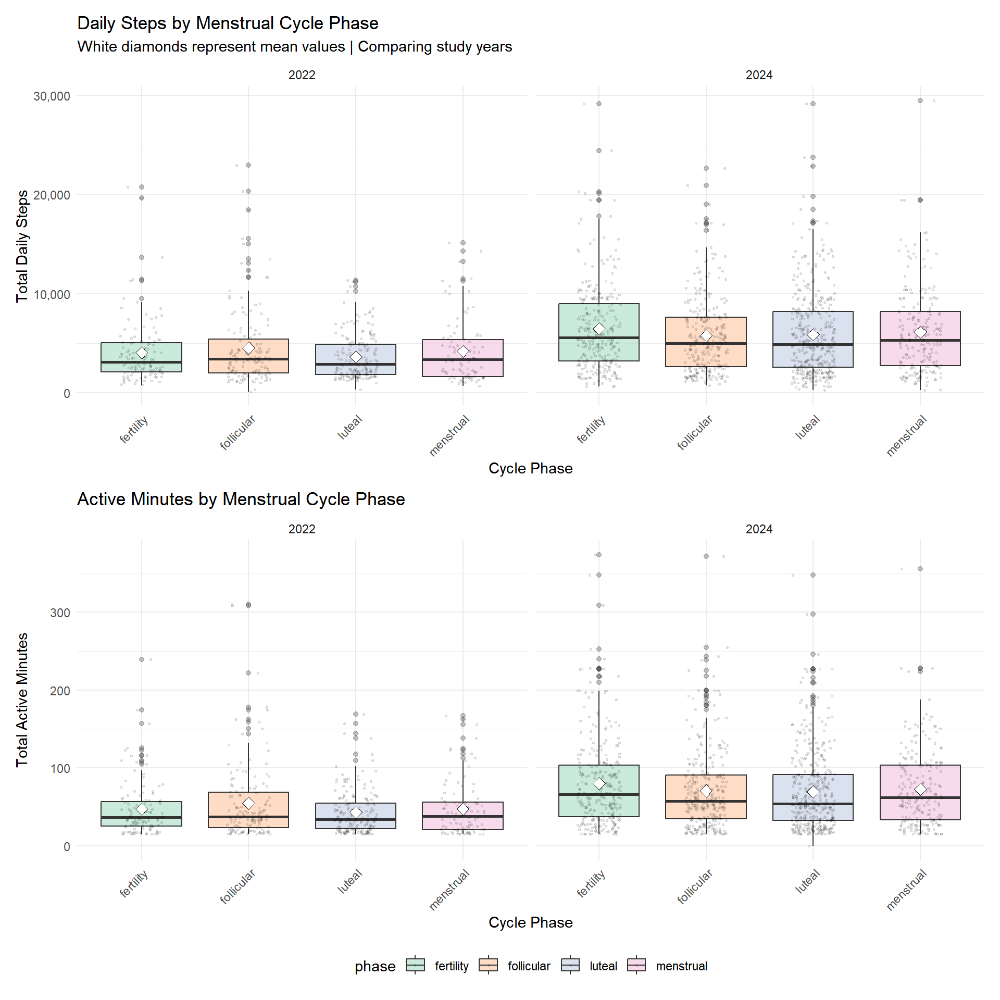
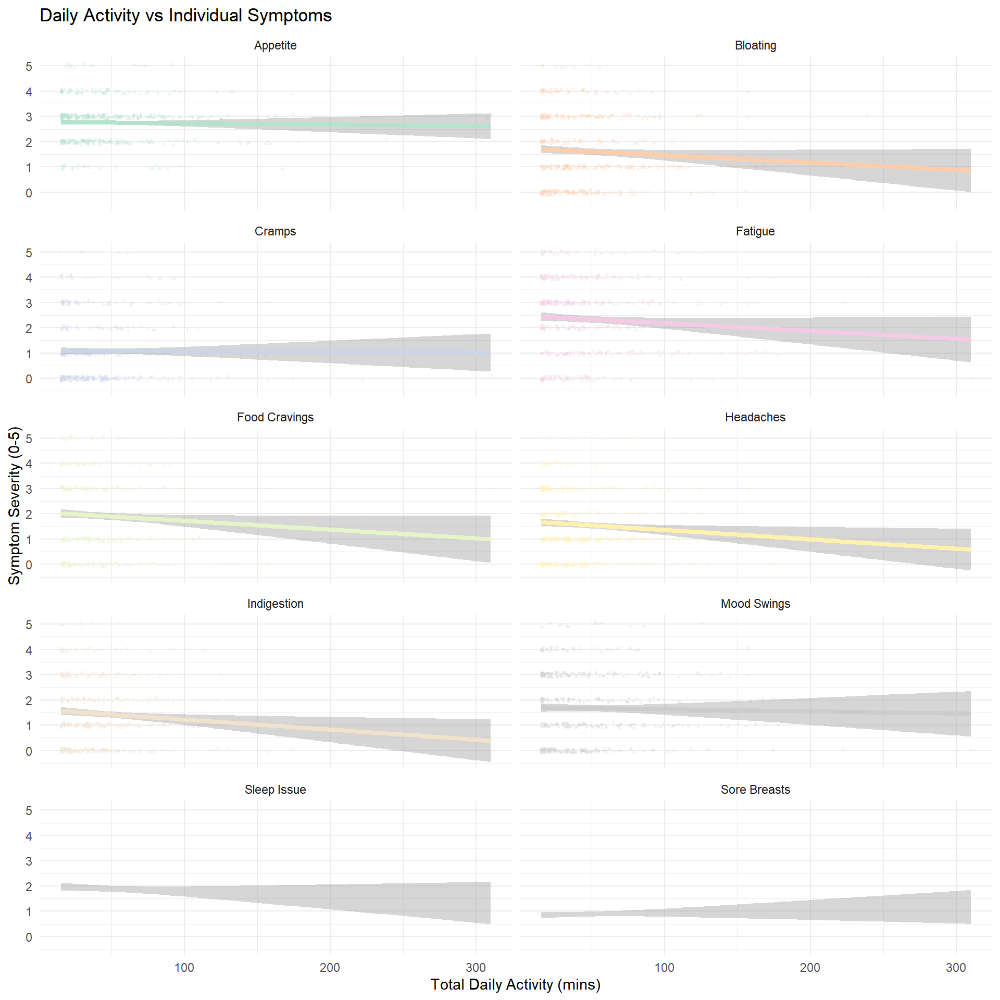
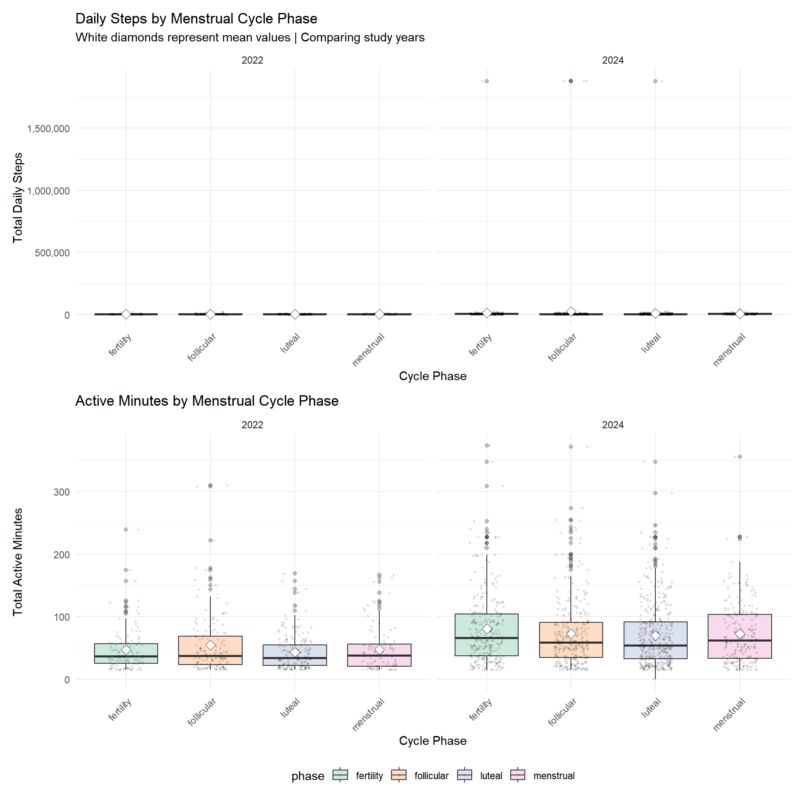

This analysis investigates the relationship between objectively measured exercise (steps, active minutes, calories) and self-reported menstrual symptoms across different cycle phases. We use data from two study intervals (2022 and 2024) to examine whether physical activity is associated with symptom severity.
library(tidyverse)
library(patchwork)
library(scales)
library(lme4)
library(lmerTest)
library(broom.mixed)
# Set plot theme
theme_set(theme_minimal() + theme(legend.position = "bottom"))
options(
ggplot2.discrete.colour = function(...) scale_colour_brewer(..., palette = "Pastel2"),
ggplot2.discrete.fill = function(...) scale_fill_brewer(..., palette = "Pastel2"),
ggplot2.continuous.colour = function(...) scale_colour_distiller(..., palette = "PuRd"),
ggplot2.continuous.fill = function(...) scale_fill_distiller(..., palette = "PuRd")
)# View observations with extreme values
# Load raw data
raw_data <- read.csv("./clean_data/all_daily_data.csv") %>%
distinct(id, study_interval, day_in_study, .keep_all = TRUE)
# Identify and view extreme observations
extreme_obs <- raw_data %>%
filter(total_steps >= 50000 |
total_active_min >= 1440 |
total_calories >= 10000) %>%
select(id, study_interval, day_in_study,
total_steps, total_active_min, total_calories,
n_sessions, total_duration_min) %>%
arrange(desc(total_steps))
# Display the observations
print(extreme_obs)## id study_interval day_in_study total_steps total_active_min total_calories
## 1 22 2024 883 1880842 273.4644 183
## 2 14 2024 922 1877616 234.2144 129
## 3 18 2024 922 1877616 253.8477 238
## 4 27 2024 887 1877616 234.2144 129
## 5 33 2024 887 1877616 234.2144 129
## n_sessions total_duration_min
## 1 3 274.0833
## 2 2 234.8333
## 3 3 254.4667
## 4 2 234.8333
## 5 2 234.8333# Or view in a nice table
library(knitr)
library(kableExtra)## Warning: package 'kableExtra' was built under R version 4.5.2##
## Attaching package: 'kableExtra'## The following object is masked from 'package:dplyr':
##
## group_rowsextreme_obs %>%
kable(caption = "Observations with Extreme Values",
col.names = c("ID", "Year", "Day", "Steps", "Active Min",
"Calories", "Sessions", "Duration")) %>%
kable_styling(bootstrap_options = c("striped", "hover"))| ID | Year | Day | Steps | Active Min | Calories | Sessions | Duration |
|---|---|---|---|---|---|---|---|
| 22 | 2024 | 883 | 1880842 | 273.4644 | 183 | 3 | 274.0833 |
| 14 | 2024 | 922 | 1877616 | 234.2144 | 129 | 2 | 234.8333 |
| 18 | 2024 | 922 | 1877616 | 253.8477 | 238 | 3 | 254.4667 |
| 27 | 2024 | 887 | 1877616 | 234.2144 | 129 | 2 | 234.8333 |
| 33 | 2024 | 887 | 1877616 | 234.2144 | 129 | 2 | 234.8333 |
# Load and check raw data
raw_data <- read.csv("./clean_data/all_daily_data.csv") %>%
distinct(id, study_interval, day_in_study, .keep_all = TRUE)
# Identify extreme values
outliers <- raw_data %>%
summarise(
extreme_steps = sum(total_steps >= 50000, na.rm = TRUE),
extreme_active = sum(total_active_min >= 1440, na.rm = TRUE),
extreme_calories = sum(total_calories >= 10000, na.rm = TRUE)
)
outliers## extreme_steps extreme_active extreme_calories
## 1 5 0 0# Apply cleaning filters
exercise_analysis <- raw_data %>%
filter(
total_steps < 50000, # Realistic daily maximum
total_active_min < 1440, # Cannot exceed 24 hours
total_calories < 10000 # Realistic exercise expenditure
)# Filtering realistic values
exercise_analysis = read.csv("./clean_data/all_daily_data.csv")
# exercise_analysis = read.csv("./clean_data/all_daily_data.csv") |>
# distinct(id, study_interval, day_in_study, .keep_all = TRUE) |>
#filter(
# Removing outliers/impossible values
# total_steps < 50000,
# total_active_min < 1440,
# total_calories < 10000
# )
p1 = ggplot(exercise_analysis |> filter(total_steps > 0),
aes(x = total_steps, fill = factor(study_interval))) +
geom_histogram(bins = 50, alpha = 0.7, position = "dodge") +
geom_vline(xintercept = median(exercise_analysis$total_steps[exercise_analysis$total_steps > 0], na.rm = TRUE),
linetype = "dashed", color = "black", linewidth = 1) +
labs(title = "Daily Step Count Distribution",
subtitle = paste("Median:",
scales::comma(round(median(exercise_analysis$total_steps[exercise_analysis$total_steps > 0], na.rm = TRUE))),
"steps"),
x = "Total Daily Steps",
y = "Count",
fill = "Study Year") +
scale_x_continuous(labels = scales::comma)
p2 = ggplot(exercise_analysis |> filter(total_active_min > 0),
aes(x = total_active_min, fill = factor(study_interval))) +
geom_histogram(bins = 50, alpha = 0.7, position = "dodge") +
geom_vline(xintercept = median(exercise_analysis$total_active_min[exercise_analysis$total_active_min > 0], na.rm = TRUE),
linetype = "dashed", color = "black", linewidth = 1) +
labs(title = "Active Minutes Distribution",
subtitle = paste("Median:",
round(median(exercise_analysis$total_active_min[exercise_analysis$total_active_min > 0], na.rm = TRUE), 1),
"minutes"),
x = "Total Active Minutes",
y = "Count",
fill = "Study Year")
p3 = ggplot(exercise_analysis |> filter(total_calories > 0),
aes(x = total_calories, fill = factor(study_interval))) +
geom_histogram(bins = 50, alpha = 0.7, position = "dodge") +
geom_vline(xintercept = median(exercise_analysis$total_calories[exercise_analysis$total_calories > 0], na.rm = TRUE),
linetype = "dashed", color = "black", linewidth = 1) +
labs(title = "Calories Burned Distribution",
subtitle = paste("Median:",
scales::comma(round(median(exercise_analysis$total_calories[exercise_analysis$total_calories > 0], na.rm = TRUE))),
"calories"),
x = "Total Calories Burned",
y = "Count",
fill = "Study Year") +
scale_x_continuous(labels = scales::comma)
p4 <- ggplot(exercise_analysis |> filter(n_sessions > 0),
aes(x = n_sessions, fill = factor(study_interval))) +
geom_bar(alpha = 0.7, position = "dodge") +
labs(title = "Exercise Sessions Per Day",
x = "Number of Sessions",
y = "Count",
fill = "Study Year")
(p1 + p2) / (p3 + p4) +
plot_layout(guides = "collect")
Data Cleaning Notes:
Key Findings:
# Prepare activity types data
activities_long <- exercise_analysis |>
filter(!is.na(activity_types), activity_types != "", activity_types != "NA") |>
select(id, study_interval, day_in_study, activity_types) |>
mutate(
# Clean activity types column
activity_types = str_replace_all(activity_types, "\\n", ","),
activity_types = str_replace_all(activity_types, "\"", "")
) |>
# Split comma-separated activities into rows
separate_rows(activity_types, sep = ",") |>
mutate(
activity_types = str_trim(activity_types),
activity_types = str_to_title(activity_types)
) |>
filter(activity_types != "", activity_types != "Na")
activities_long## # A tibble: 2,078 × 4
## id study_interval day_in_study activity_types
## <int> <int> <int> <chr>
## 1 1 2022 1 Sport
## 2 1 2022 25 Sport
## 3 1 2022 33 Walk
## 4 1 2022 34 Walk
## 5 1 2022 38 Walk
## 6 1 2022 39 Walk
## 7 1 2022 40 Walk
## 8 1 2022 41 Walk
## 9 1 2022 44 Outdoor Bike
## 10 1 2022 44 Walk
## # ℹ 2,068 more rows# Count activities by year
activity_counts <- activities_long %>%
group_by(study_interval, activity_types) %>%
summarise(n_days = n(), .groups = "drop") %>%
group_by(study_interval) %>%
mutate(pct = n_days / sum(n_days) * 100) %>%
ungroup()
# Plot 1: Activity type frequency by year
p1 <- ggplot(activity_counts,
aes(x = reorder(activity_types, pct), y = pct,
fill = factor(study_interval))) +
geom_col(position = "dodge", alpha = 0.8) +
coord_flip() +
labs(title = "Most Common Activity Types by Study Year",
x = "Activity Type",
y = "% of Days with Exercise",
fill = "Study Year") +
theme_minimal() +
theme(legend.position = "bottom")
p1
p1 = ggplot(exercise_analysis |> filter(!is.na(phase), total_steps > 0),
aes(x = phase, y = total_steps, fill = phase)) +
geom_boxplot(alpha = 0.7, outlier.alpha = 0.3) +
geom_jitter(width = 0.2, alpha = 0.1, size = 0.5) +
stat_summary(fun = mean, geom = "point", shape = 23, size = 3, fill = "white") +
facet_wrap(~study_interval, ncol = 2) + # Side by side
labs(title = "Daily Steps by Menstrual Cycle Phase",
subtitle = "White diamonds represent mean values | Comparing study years",
x = "Cycle Phase",
y = "Total Daily Steps") +
scale_y_continuous(labels = comma) +
theme(legend.position = "bottom",
axis.text.x = element_text(angle = 45, hjust = 1))
p2 = ggplot(exercise_analysis |> filter(!is.na(phase), total_active_min > 0),
aes(x = phase, y = total_active_min, fill = phase)) +
geom_boxplot(alpha = 0.7, outlier.alpha = 0.3) +
geom_jitter(width = 0.2, alpha = 0.1, size = 0.5) +
stat_summary(fun = mean, geom = "point", shape = 23, size = 3, fill = "white") +
facet_wrap(~study_interval, ncol = 2) +
labs(title = "Active Minutes by Menstrual Cycle Phase",
x = "Cycle Phase",
y = "Total Active Minutes") +
theme(legend.position = "bottom",
axis.text.x = element_text(angle = 45, hjust = 1))
p1 / p2 + plot_layout(guides = "collect")
Key Findings:
symptoms_long = exercise_analysis |>
filter(total_active_min > 0) |>
select(id, total_active_min, appetite_score, sorebreasts_score, sleepissue_score, cramps_score, fatigue_score,
headaches_score, moodswing_score, foodcravings_score, indigestion_score, bloating_score) |>
pivot_longer(cols = ends_with("_score"),
names_to = "symptom",
values_to = "severity") |>
filter(!is.na(severity)) |>
mutate(symptom = case_when(
symptom == "appetite_score" ~ "Appetite",
symptom == "sorebreasts_score" ~ "Sore Breasts",
symptom == "sleepissue_score" ~ "Sleep Issue",
symptom == "cramps_score" ~ "Cramps",
symptom == "fatigue_score" ~ "Fatigue",
symptom == "headaches_score" ~ "Headaches",
symptom == "moodswing_score" ~ "Mood Swings",
symptom == "foodcravings_score" ~ "Food Cravings",
symptom == "indigestion_score" ~ "Indigestion",
symptom == "bloating_score" ~ "Bloating"
))
p4 = ggplot(symptoms_long,
aes(x = total_active_min, y = severity, color = symptom)) +
geom_jitter(alpha = 0.2, size = 0.5, height = 0.1) +
geom_smooth(method = "lm", se = TRUE, linewidth = 1.5) +
facet_wrap(~symptom, ncol = 2) +
labs(title = "Daily Activity vs Individual Symptoms",
x = "Total Daily Activity (mins)",
y = "Symptom Severity (0-5)") +
scale_x_continuous(labels = comma) +
scale_y_continuous(breaks = 0:5) +
theme(legend.position = "none")
p4Key Findings:
We used linear mixed-effects models to test associations between daily physical activity and menstrual symptom severity. For each of 10 symptoms, we fit models with:
The random intercept structure accounts for repeated measures within individuals, including the 20 participants (47.6%) who contributed data in both 2022 and 2024 study intervals. Models were fit using the lme4 package in R with REML = FALSE. Statistical significance was assessed at α = 0.05.
# Model 1: Exercise → cramps
model_cramps = lmer(cramps_score ~ total_active_min + phase + (1|id),
data = exercise_analysis,
REML = FALSE)
summary(model_cramps)## Linear mixed model fit by maximum likelihood . t-tests use Satterthwaite's
## method [lmerModLmerTest]
## Formula: cramps_score ~ total_active_min + phase + (1 | id)
## Data: exercise_analysis
##
## AIC BIC logLik -2*log(L) df.resid
## 1265.8 1295.1 -625.9 1251.8 480
##
## Scaled residuals:
## Min 1Q Median 3Q Max
## -1.8748 -0.5374 -0.1912 0.2757 4.2158
##
## Random effects:
## Groups Name Variance Std.Dev.
## id (Intercept) 0.6555 0.8096
## Residual 0.6716 0.8195
## Number of obs: 487, groups: id, 23
##
## Fixed effects:
## Estimate Std. Error df t value Pr(>|t|)
## (Intercept) 6.757e-01 1.947e-01 3.305e+01 3.471 0.00146 **
## total_active_min -4.666e-05 1.054e-03 4.686e+02 -0.044 0.96469
## phasefollicular 7.566e-02 1.106e-01 4.666e+02 0.684 0.49417
## phaseluteal 5.271e-01 1.059e-01 4.702e+02 4.977 9.08e-07 ***
## phasemenstrual 1.104e+00 1.219e-01 4.712e+02 9.052 < 2e-16 ***
## ---
## Signif. codes: 0 '***' 0.001 '**' 0.01 '*' 0.05 '.' 0.1 ' ' 1
##
## Correlation of Fixed Effects:
## (Intr) ttl_c_ phsfll phsltl
## totl_ctv_mn -0.220
## phasefllclr -0.261 -0.120
## phaseluteal -0.313 0.010 0.547
## phasemnstrl -0.282 -0.010 0.464 0.529# Model 2: Exercise → fatigue
model_fatigue = lmer(fatigue_score ~ total_active_min + phase + (1|id),
data = exercise_analysis,
REML = FALSE)
summary(model_fatigue)## Linear mixed model fit by maximum likelihood . t-tests use Satterthwaite's
## method [lmerModLmerTest]
## Formula: fatigue_score ~ total_active_min + phase + (1 | id)
## Data: exercise_analysis
##
## AIC BIC logLik -2*log(L) df.resid
## 1545.3 1574.7 -765.7 1531.3 483
##
## Scaled residuals:
## Min 1Q Median 3Q Max
## -3.5272 -0.5929 -0.0512 0.6314 3.8870
##
## Random effects:
## Groups Name Variance Std.Dev.
## id (Intercept) 1.018 1.009
## Residual 1.176 1.084
## Number of obs: 490, groups: id, 23
##
## Fixed effects:
## Estimate Std. Error df t value Pr(>|t|)
## (Intercept) 2.467907 0.246028 34.928340 10.031 8e-12 ***
## total_active_min -0.002682 0.001361 473.226001 -1.971 0.0493 *
## phasefollicular 0.260917 0.145952 470.443347 1.788 0.0745 .
## phaseluteal 0.102270 0.139386 473.823527 0.734 0.4635
## phasemenstrual 0.293860 0.160674 474.677079 1.829 0.0680 .
## ---
## Signif. codes: 0 '***' 0.001 '**' 0.01 '*' 0.05 '.' 0.1 ' ' 1
##
## Correlation of Fixed Effects:
## (Intr) ttl_c_ phsfll phsltl
## totl_ctv_mn -0.234
## phasefllclr -0.270 -0.124
## phaseluteal -0.325 0.014 0.545
## phasemnstrl -0.295 0.004 0.464 0.527# Model 3: Exercise → stress
model_stress = lmer(stress_score ~ total_active_min + phase + (1|id),
data = exercise_analysis,
REML = FALSE)
summary(model_stress)## Linear mixed model fit by maximum likelihood . t-tests use Satterthwaite's
## method [lmerModLmerTest]
## Formula: stress_score ~ total_active_min + phase + (1 | id)
## Data: exercise_analysis
##
## AIC BIC logLik -2*log(L) df.resid
## 8927.5 8963.9 -4456.8 8913.5 1328
##
## Scaled residuals:
## Min 1Q Median 3Q Max
## -11.8306 -0.5371 0.0438 0.6073 2.3966
##
## Random effects:
## Groups Name Variance Std.Dev.
## id (Intercept) 8.729 2.954
## Residual 44.477 6.669
## Number of obs: 1335, groups: id, 26
##
## Fixed effects:
## Estimate Std. Error df t value Pr(>|t|)
## (Intercept) 7.699e+01 7.535e-01 5.895e+01 102.172 <2e-16 ***
## total_active_min -1.170e-03 3.634e-03 1.328e+03 -0.322 0.748
## phasefollicular 5.202e-01 5.444e-01 1.327e+03 0.956 0.339
## phaseluteal -7.110e-01 5.076e-01 1.327e+03 -1.401 0.162
## phasemenstrual 2.018e-01 5.828e-01 1.317e+03 0.346 0.729
## ---
## Signif. codes: 0 '***' 0.001 '**' 0.01 '*' 0.05 '.' 0.1 ' ' 1
##
## Correlation of Fixed Effects:
## (Intr) ttl_c_ phsfll phsltl
## totl_ctv_mn -0.344
## phasefllclr -0.379 0.055
## phaseluteal -0.418 0.069 0.525
## phasemnstrl -0.343 0.049 0.446 0.502# Model 4: Exercise → mood swings
model_mood = lmer(moodswing_score ~ total_active_min + phase + (1|id),
data = exercise_analysis,
REML = FALSE)
summary(model_mood)## Linear mixed model fit by maximum likelihood . t-tests use Satterthwaite's
## method [lmerModLmerTest]
## Formula: moodswing_score ~ total_active_min + phase + (1 | id)
## Data: exercise_analysis
##
## AIC BIC logLik -2*log(L) df.resid
## 1404.6 1433.9 -695.3 1390.6 478
##
## Scaled residuals:
## Min 1Q Median 3Q Max
## -3.3104 -0.5034 -0.1327 0.4377 3.8246
##
## Random effects:
## Groups Name Variance Std.Dev.
## id (Intercept) 1.0026 1.0013
## Residual 0.8986 0.9479
## Number of obs: 485, groups: id, 23
##
## Fixed effects:
## Estimate Std. Error df t value Pr(>|t|)
## (Intercept) 1.836570 0.237305 32.830978 7.739 6.71e-09 ***
## total_active_min -0.001123 0.001221 467.100818 -0.919 0.3585
## phasefollicular 0.031829 0.127959 465.057240 0.249 0.8037
## phaseluteal 0.187347 0.122554 468.127353 1.529 0.1270
## phasemenstrual 0.334806 0.141285 468.285367 2.370 0.0182 *
## ---
## Signif. codes: 0 '***' 0.001 '**' 0.01 '*' 0.05 '.' 0.1 ' ' 1
##
## Correlation of Fixed Effects:
## (Intr) ttl_c_ phsfll phsltl
## totl_ctv_mn -0.211
## phasefllclr -0.248 -0.119
## phaseluteal -0.297 0.010 0.547
## phasemnstrl -0.265 -0.013 0.463 0.528# Model 5: Exercise → sleep issues
model_sleep = lmer(sleepissue_score ~ total_active_min + phase + (1|id),
data = exercise_analysis,
REML = FALSE)
summary(model_sleep)## Linear mixed model fit by maximum likelihood . t-tests use Satterthwaite's
## method [lmerModLmerTest]
## Formula: sleepissue_score ~ total_active_min + phase + (1 | id)
## Data: exercise_analysis
##
## AIC BIC logLik -2*log(L) df.resid
## 1468.4 1497.8 -727.2 1454.4 481
##
## Scaled residuals:
## Min 1Q Median 3Q Max
## -3.0889 -0.4629 -0.2024 0.5656 3.2474
##
## Random effects:
## Groups Name Variance Std.Dev.
## id (Intercept) 0.9732 0.9865
## Residual 1.0127 1.0063
## Number of obs: 488, groups: id, 23
##
## Fixed effects:
## Estimate Std. Error df t value Pr(>|t|)
## (Intercept) 2.124e+00 2.376e-01 3.279e+01 8.941 2.61e-10 ***
## total_active_min -3.841e-04 1.266e-03 4.705e+02 -0.303 0.762
## phasefollicular -1.654e-01 1.358e-01 4.674e+02 -1.219 0.224
## phaseluteal -8.634e-02 1.300e-01 4.711e+02 -0.664 0.507
## phasemenstrual 1.314e-01 1.495e-01 4.716e+02 0.879 0.380
## ---
## Signif. codes: 0 '***' 0.001 '**' 0.01 '*' 0.05 '.' 0.1 ' ' 1
##
## Correlation of Fixed Effects:
## (Intr) ttl_c_ phsfll phsltl
## totl_ctv_mn -0.222
## phasefllclr -0.262 -0.127
## phaseluteal -0.315 0.010 0.547
## phasemnstrl -0.286 0.001 0.466 0.529# Model 6: Exercise → bloating
model_bloating = lmer(bloating_score ~ total_active_min + phase + (1|id),
data = exercise_analysis,
REML = FALSE)
summary(model_bloating)## Linear mixed model fit by maximum likelihood . t-tests use Satterthwaite's
## method [lmerModLmerTest]
## Formula: bloating_score ~ total_active_min + phase + (1 | id)
## Data: exercise_analysis
##
## AIC BIC logLik -2*log(L) df.resid
## 1352.9 1382.3 -669.5 1338.9 481
##
## Scaled residuals:
## Min 1Q Median 3Q Max
## -3.2181 -0.4062 -0.1555 0.2982 3.2756
##
## Random effects:
## Groups Name Variance Std.Dev.
## id (Intercept) 1.1441 1.0696
## Residual 0.7848 0.8859
## Number of obs: 488, groups: id, 23
##
## Fixed effects:
## Estimate Std. Error df t value Pr(>|t|)
## (Intercept) 1.612e+00 2.465e-01 3.043e+01 6.542 2.9e-07 ***
## total_active_min -2.529e-04 1.116e-03 4.693e+02 -0.227 0.820856
## phasefollicular -3.568e-03 1.196e-01 4.673e+02 -0.030 0.976212
## phaseluteal 3.841e-01 1.146e-01 4.699e+02 3.351 0.000871 ***
## phasemenstrual 4.009e-01 1.318e-01 4.702e+02 3.042 0.002480 **
## ---
## Signif. codes: 0 '***' 0.001 '**' 0.01 '*' 0.05 '.' 0.1 ' ' 1
##
## Correlation of Fixed Effects:
## (Intr) ttl_c_ phsfll phsltl
## totl_ctv_mn -0.188
## phasefllclr -0.222 -0.126
## phaseluteal -0.267 0.011 0.547
## phasemnstrl -0.243 0.001 0.466 0.529# Model 7: Exercise → appetite
model_appetite = lmer(appetite_score ~ total_active_min + phase + (1|id),
data = exercise_analysis,
REML = FALSE)
summary(model_appetite)## Linear mixed model fit by maximum likelihood . t-tests use Satterthwaite's
## method [lmerModLmerTest]
## Formula: appetite_score ~ total_active_min + phase + (1 | id)
## Data: exercise_analysis
##
## AIC BIC logLik -2*log(L) df.resid
## 1112.0 1141.4 -549.0 1098.0 483
##
## Scaled residuals:
## Min 1Q Median 3Q Max
## -3.5900 -0.7095 -0.0207 0.5041 2.7077
##
## Random effects:
## Groups Name Variance Std.Dev.
## id (Intercept) 0.2401 0.4900
## Residual 0.4974 0.7053
## Number of obs: 490, groups: id, 23
##
## Fixed effects:
## Estimate Std. Error df t value Pr(>|t|)
## (Intercept) 2.875e+00 1.313e-01 4.300e+01 21.895 <2e-16 ***
## total_active_min 3.267e-04 8.830e-04 4.767e+02 0.370 0.7116
## phasefollicular -1.619e-01 9.482e-02 4.720e+02 -1.707 0.0885 .
## phaseluteal -9.643e-03 9.044e-02 4.768e+02 -0.107 0.9151
## phasemenstrual -5.397e-02 1.042e-01 4.782e+02 -0.518 0.6048
## ---
## Signif. codes: 0 '***' 0.001 '**' 0.01 '*' 0.05 '.' 0.1 ' ' 1
##
## Correlation of Fixed Effects:
## (Intr) ttl_c_ phsfll phsltl
## totl_ctv_mn -0.286
## phasefllclr -0.330 -0.125
## phaseluteal -0.397 0.013 0.546
## phasemnstrl -0.358 0.003 0.465 0.527# Model 8: Exercise → sore breasts
model_sorebreasts = lmer(sorebreasts_score ~ total_active_min + phase + (1|id),
data = exercise_analysis,
REML = FALSE)
summary(model_sorebreasts)## Linear mixed model fit by maximum likelihood . t-tests use Satterthwaite's
## method [lmerModLmerTest]
## Formula: sorebreasts_score ~ total_active_min + phase + (1 | id)
## Data: exercise_analysis
##
## AIC BIC logLik -2*log(L) df.resid
## 1095.2 1124.5 -540.6 1081.2 480
##
## Scaled residuals:
## Min 1Q Median 3Q Max
## -2.5866 -0.4788 -0.0787 0.1664 4.8257
##
## Random effects:
## Groups Name Variance Std.Dev.
## id (Intercept) 0.5941 0.7708
## Residual 0.4677 0.6839
## Number of obs: 487, groups: id, 23
##
## Fixed effects:
## Estimate Std. Error df t value Pr(>|t|)
## (Intercept) 6.654e-01 1.800e-01 3.165e+01 3.697 0.000823 ***
## total_active_min 4.040e-04 8.798e-04 4.682e+02 0.459 0.646285
## phasefollicular -2.127e-02 9.232e-02 4.666e+02 -0.230 0.817881
## phaseluteal 2.371e-01 8.845e-02 4.696e+02 2.681 0.007601 **
## phasemenstrual 4.254e-01 1.018e-01 4.703e+02 4.177 3.52e-05 ***
## ---
## Signif. codes: 0 '***' 0.001 '**' 0.01 '*' 0.05 '.' 0.1 ' ' 1
##
## Correlation of Fixed Effects:
## (Intr) ttl_c_ phsfll phsltl
## totl_ctv_mn -0.198
## phasefllclr -0.235 -0.120
## phaseluteal -0.282 0.010 0.547
## phasemnstrl -0.255 -0.010 0.464 0.529# Model 9: Exercise → food cravings
model_foodcravings = lmer(foodcravings_score ~ total_active_min + phase + (1|id),
data = exercise_analysis,
REML = FALSE)
summary(model_foodcravings)## Linear mixed model fit by maximum likelihood . t-tests use Satterthwaite's
## method [lmerModLmerTest]
## Formula: foodcravings_score ~ total_active_min + phase + (1 | id)
## Data: exercise_analysis
##
## AIC BIC logLik -2*log(L) df.resid
## 1532.1 1561.5 -759.1 1518.1 480
##
## Scaled residuals:
## Min 1Q Median 3Q Max
## -2.8215 -0.4849 -0.0844 0.4775 2.9251
##
## Random effects:
## Groups Name Variance Std.Dev.
## id (Intercept) 1.149 1.072
## Residual 1.160 1.077
## Number of obs: 487, groups: id, 23
##
## Fixed effects:
## Estimate Std. Error df t value Pr(>|t|)
## (Intercept) 2.025357 0.257233 33.122162 7.874 4.34e-09 ***
## total_active_min -0.001306 0.001385 468.676043 -0.943 0.3462
## phasefollicular -0.152891 0.145321 466.671362 -1.052 0.2933
## phaseluteal 0.278339 0.139177 470.236078 2.000 0.0461 *
## phasemenstrual 0.071820 0.160225 471.231603 0.448 0.6542
## ---
## Signif. codes: 0 '***' 0.001 '**' 0.01 '*' 0.05 '.' 0.1 ' ' 1
##
## Correlation of Fixed Effects:
## (Intr) ttl_c_ phsfll phsltl
## totl_ctv_mn -0.219
## phasefllclr -0.259 -0.120
## phaseluteal -0.311 0.010 0.547
## phasemnstrl -0.281 -0.010 0.464 0.529# Model 10: Exercise → indigestion
model_indigestion = lmer(indigestion_score ~ total_active_min + phase + (1|id),
data = exercise_analysis,
REML = FALSE)
summary(model_indigestion)## Linear mixed model fit by maximum likelihood . t-tests use Satterthwaite's
## method [lmerModLmerTest]
## Formula: indigestion_score ~ total_active_min + phase + (1 | id)
## Data: exercise_analysis
##
## AIC BIC logLik -2*log(L) df.resid
## 1382.3 1411.7 -684.2 1368.3 480
##
## Scaled residuals:
## Min 1Q Median 3Q Max
## -2.4525 -0.3690 -0.1614 0.1884 3.5885
##
## Random effects:
## Groups Name Variance Std.Dev.
## id (Intercept) 1.0583 1.0288
## Residual 0.8439 0.9187
## Number of obs: 487, groups: id, 23
##
## Fixed effects:
## Estimate Std. Error df t value Pr(>|t|)
## (Intercept) 1.457001 0.240530 30.800642 6.057 1.07e-06 ***
## total_active_min -0.001599 0.001182 467.608774 -1.353 0.17663
## phasefollicular 0.126242 0.124003 466.027077 1.018 0.30918
## phaseluteal 0.355403 0.118810 469.054074 2.991 0.00292 **
## phasemenstrual 0.312394 0.136794 469.868346 2.284 0.02284 *
## ---
## Signif. codes: 0 '***' 0.001 '**' 0.01 '*' 0.05 '.' 0.1 ' ' 1
##
## Correlation of Fixed Effects:
## (Intr) ttl_c_ phsfll phsltl
## totl_ctv_mn -0.199
## phasefllclr -0.236 -0.120
## phaseluteal -0.284 0.010 0.547
## phasemnstrl -0.257 -0.010 0.464 0.529# Cleaning results:
# Extract coefficients for exercise effect
results_summary = bind_rows(
tidy(model_cramps, effects = "fixed") %>% mutate(outcome = "Cramps"),
tidy(model_fatigue, effects = "fixed") %>% mutate(outcome = "Fatigue"),
tidy(model_stress, effects = "fixed") %>% mutate(outcome = "Stress"),
tidy(model_mood, effects = "fixed") %>% mutate(outcome = "Mood swings"),
tidy(model_sleep, effects = "fixed") %>% mutate(outcome = "Sleep issues"),
tidy(model_bloating, effects = "fixed") %>% mutate(outcome = "Bloating"),
tidy(model_appetite, effects = "fixed") %>% mutate(outcome = "Appetite"),
tidy(model_indigestion, effects = "fixed") %>% mutate(outcome = "Indigestion"),
tidy(model_sorebreasts, effects = "fixed") %>% mutate(outcome = "Sore breasts"),
tidy(model_foodcravings, effects = "fixed") %>% mutate(outcome = "Food cravings")
) %>%
filter(term == "total_active_min") %>%
select(outcome, estimate, std.error, statistic, p.value) %>%
mutate(
significant = ifelse(p.value < 0.05, "Yes", "No"),
p.value = format.pval(p.value, digits = 3, eps = 0.001)
)
knitr::kable(results_summary)| outcome | estimate | std.error | statistic | p.value | significant |
|---|---|---|---|---|---|
| Cramps | -0.0000467 | 0.0010536 | -0.0442889 | 0.9647 | No |
| Fatigue | -0.0026819 | 0.0013608 | -1.9708807 | 0.0493 | Yes |
| Stress | -0.0011698 | 0.0036337 | -0.3219312 | 0.7476 | No |
| Mood swings | -0.0011226 | 0.0012213 | -0.9191398 | 0.3585 | No |
| Sleep issues | -0.0003841 | 0.0012664 | -0.3033156 | 0.7618 | No |
| Bloating | -0.0002529 | 0.0011161 | -0.2265707 | 0.8209 | No |
| Appetite | 0.0003267 | 0.0008830 | 0.3699452 | 0.7116 | No |
| Indigestion | -0.0015992 | 0.0011818 | -1.3532633 | 0.1766 | No |
| Sore breasts | 0.0004040 | 0.0008798 | 0.4592262 | 0.6463 | No |
| Food cravings | -0.0013056 | 0.0013846 | -0.9429113 | 0.3462 | No |
Our analysis examined the relationship between objectively measured physical activity and menstrual symptom severity across 10 different symptoms. The mixed-effects modeling approach appropriately accounts for the repeated-measures structure of the data and controls for menstrual cycle phase and study year effects.
Key Takeaways:
Individual Variation Dominates: The high ICC values indicate that most variance in symptoms is between individuals rather than within individuals over time. This suggests symptom experiences are highly personalized.
Exercise Effects Are Complex: The relationship between exercise and symptoms is not uniformly beneficial or harmful. Some symptoms may respond to exercise while others do not.
Reverse Causation Concerns: Positive associations (exercise → worse symptoms) likely reflect reverse causation. Symptoms prevent exercise rather than exercise causing symptoms.